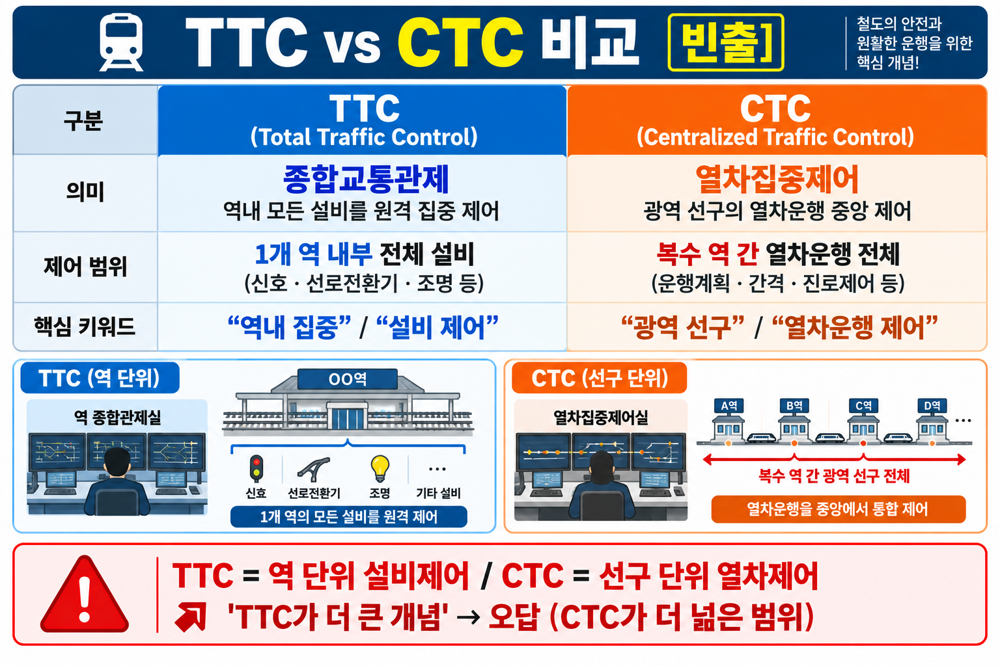
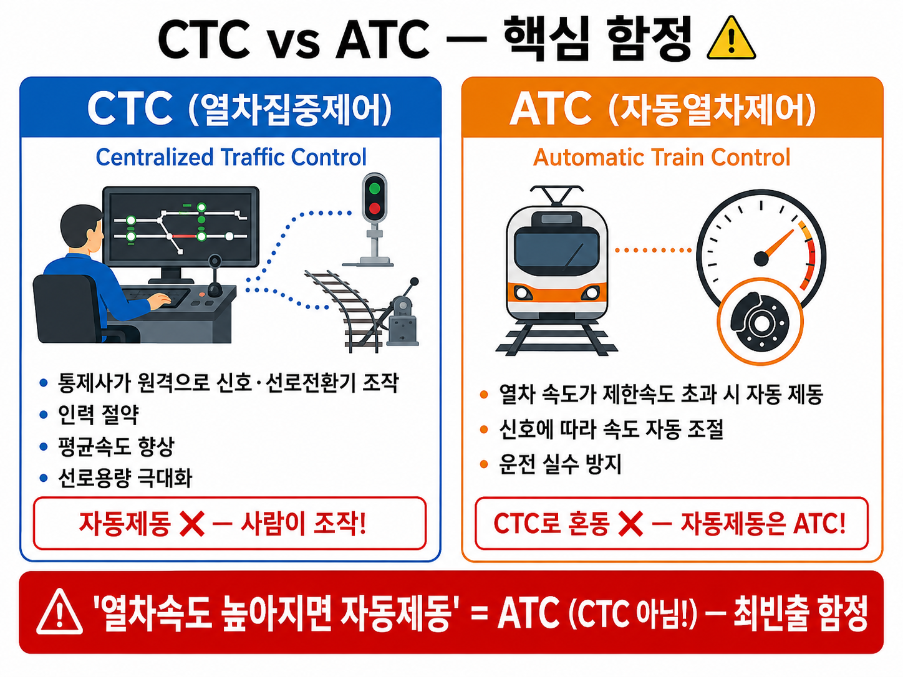

§0 · 선행 용어
TTC (Train Traffic Control)
열차집중제어. 한국 철도에서 CTC와 혼용되는 용어. 중앙 사령실에서 다수 역의 신호·진로를 원격 감시·제어.
→ 시험에서 TTC = CTC로 보면 된다
CTC (Centralized Traffic Control)
열차집중제어장치. 중앙에서 신호·진로를 원격 제어하는 시스템. 여러 역을 한 곳에서 감시·조작.
→ 연동장치와 역할 분담 구분 필수 ★
TMS (Train Management System)
열차운행관리시스템. 열차운행 현황·운행계획·지연 등을 종합 관리. CTC보다 상위 관리 개념.
→ CTC ≠ TMS: CTC=신호·진로 제어 / TMS=운행관리·계획 ★
LCP (Local Control Panel)
현장역에 설치된 제어반. CTC 명령 수신 → 연동장치·ATC 전송. 현장 설비 상태 → CTC 전송.
★ 설치 위치: 현장역 (CTC 사령실 아님)
연동장치
신호기·선로전환기 간 상호 논리조건을 확인해 충돌·탈선 방지. CTC 명령에도 최종 안전확인을 담당.
→ CTC는 명령(What) / 연동장치는 안전논리 확인(Safety)
운전보안장치
열차 운전의 안전을 확보하는 장치 총칭. ATS·ATP·ATC·ATO 등 차상·지상 장치 포함.
→ 상세 내용: 08-01 참조 (본 단원은 개요 범위)
§1 · TTC / CTC — 열차집중제어

VIS-087 | TTC / CTC 비교표 — 명칭·역할·구성 비교
CTC가 왜 필요한가
CTC 이전: 각 역마다 역무원이 신호기·선로전환기를 직접 조작 → 수십 개 역에 수십 명 필요, 운전 밀도 한계.
CTC 이후: 1개 중앙 사령실에서 수십 개 역을 동시에 감시·원격 제어 → 인력 절감, 고밀도 운전 가능.
CTC 주요 효과
- 열차 운행상황 집중 감시·표시 — 전 구간 열차 위치·운행상황 대형 표시반 실시간 표시
- 진로 자동 제어 — 열차 운행계획에 따라 진로 자동 설정·해제
- 신호설비 원격 감시 — 원격지 신호기·선로전환기 상태 감시
- 인력 절감 — 각 역 신호취급 인원 감축 가능
CTC 구성 요소
- CTC 사령실 — 중앙 감시·제어 거점. 표시반, 제어반, 서버 등 설치
- LCP (현장역) — CTC 명령 → 연동장치·ATC 전달 / 현장 설비 상태 → CTC 전송 ★ 위치: 현장역
- 연동장치 — CTC가 진로 명령을 내려도 실제 안전확인·충돌방지는 연동장치가 최종 담당
⚠ 함정 — CTC 효과에 포함되지 않는 것 ★ 빈출
"열차운행계획의 문서화"는 CTC 효과가 아니다. 문서화·계획 수립은 TMS(열차운행관리시스템)의 역할.
💡 핵심 관계
CTC = 명령 (What) · 연동장치 = 안전논리 확인 (How / Safety)
CTC의 진로 명령이 들어와도 연동장치가 안전조건(선로전환기 정위, 적색신호 구간 없음 등)을 확인하지 않으면 신호가 진행을 현시하지 않는다.
§2 · TMS — 열차운행관리시스템
TMS vs CTC 핵심 비교
CTC가 신호·진로의 현장 실시간 제어에 집중한다면, TMS는 운행계획 수립·지연 관리·예측·조정 등 상위 관리 업무를 담당한다.
역할 분담
| 구분 | CTC | TMS |
|---|
| 역할 | 신호·진로 원격 감시·제어 | 열차운행 관리·계획·지연 조정 |
| 성격 | 현장 실시간 제어 | 운행 관리·상위 계획 |
| 관계 | CTC ⊂ TMS 체계 안에 포함 | CTC보다 상위 개념 |
⚠ 함정 — CTC = 운행관리로 외우면 오답 ★
CTC는 신호·진로 제어. 운행관리·계획 수립은 TMS.
§3 · 운전보안장치 개요 — ATS · ATP · ATC · ATO
| 장치 | 풀네임 | 핵심 기능 | 시험 키워드 |
|---|
| ATS |
Automatic Train Stop |
신호위반·위험 시 자동 정지 개입 |
불연속 지점 경보·제동 ★ |
| ATP |
Automatic Train Protection |
운행권한·허용속도 감시 → 위반 시 제동 강제 |
ATO의 안전 기반(하위) ★★ |
| ATC |
Automatic Train Control |
허용속도 연속 감시·제어 → 초과 시 자동 제동 |
연속 속도감시 ★ |
| ATO |
Automatic Train Operation |
출발·가속·감속·정위치정차·출입문 자동 제어 |
ATP 위에서 동작(상위) ★★ |
💡 계층 관계: ATP(안전 기반, 하위) → ATO(자동운전, 상위)
ATO는 ATP가 없으면 단독 안전운행 불가. ATP는 ATO 없이도 동작 가능.
⚠ ATS vs ATC 혼동 주의 ★ 빈출
ATS = 불연속(지점) 경보·제동 / ATC = 연속 속도감시·제동
🔗 CROSS-REF — 08-01 ATS·ATP·ATC·ATO 열차제어 시스템
- 지상자 구조·속도조사식 원리·차내신호·제동곡선 상세 → 08-01
- ATS-S / ATS-P / ETCS 등 세부 방식 비교 → 08-01
- VIS-08A ATS·ATP·ATC·ATO 4시스템 종합비교 이미지 → 08-01 §6
§4 · CTC와 연동장치의 역할 분담

VIS-040 | CTC · ATC 비교도해 — 시스템 계층 및 역할
[명령 흐름] CTC 사령실에서 진로 명령 발령 → LCP(현장역)가 수신 → 연동장치로 전달 → 연동장치가 안전조건 확인 → 조건 충족 시 신호기 현시·선로전환기 동작
| 단계 | 주체 | 역할 |
|---|
| ① | CTC 사령실 | 진로 설정 명령 발령 (운전 관제) |
| ② | LCP (현장역) | CTC 명령 수신 → 연동장치·ATC에 전달 |
| ③ | 연동장치 | 안전조건 확인 (충돌·탈선 방지) → 최종 신호 현시 |
💡 핵심 암기
CTC가 아무리 "가라"고 해도, 연동장치가 안전조건을 확인하기 전까지는 신호가 진행을 현시하지 않는다.
§5 · ATS 수치 기준
| 항목 | 기준값 | 비고 |
|---|
| ATS 지상자 레일면 이격거리 |
400mm 이상 |
★ 빈출 수치 |
| 속도조사식 ATS 지상자 설치위치 |
우측 레일면에서 300mm ±10mm |
이격거리와 혼동 금지 |
⚠ 함정 — 두 수치 혼동 빈출 ★
"ATS 지상자 이격거리" = 400mm 이상 / "속도조사식 설치위치" = 300mm ±10mm
§6 · 시험 포인트 요약
TTC = CTC (동의어)
열차집중제어. 시험에서 TTC와 CTC는 같은 개념으로 취급.
⚠ CTC 효과에 포함되지 않는 것 ★★
"열차운행계획의 문서화" → TMS 역할. CTC는 감시·제어·진로 자동제어.
CTC vs 연동장치 역할 분담 ★★
CTC = 명령·감시 / 연동장치 = 안전확인·충돌방지
CTC vs TMS ★
CTC = 신호·진로 제어 / TMS = 운행관리·계획
⚠ LCP 설치 위치 ★
LCP = 현장역. CTC 사령실이 아니다.
ATP와 ATO 계층 ★★
ATP(하위·안전기반) → ATO(상위·자동운전). ATO는 ATP 위에서 동작.
⚠ ATS vs ATC 핵심 차이 ★
ATS = 불연속 경보·제동 / ATC = 연속 속도감시·제동
⚠ ATS 지상자 이격거리 ★
400mm 이상 (300mm ±10mm는 속도조사식 설치위치 — 혼동 빈출)
§7 · 관련 문제
📋 철도신호 기출복원 CBT · sig_101 · A등급
Q1
다음 설명에 해당하는 용어·장치로 가장 적절한 것은?
"여러 역의 신호와 진로를 중앙에서 감시·제어하는 열차집중제어 방식이다."
- ① ATC
- ② ATP와 ATO의 관계
- ③ CTC
- ④ 운행권한(Movement Authority)
📋 철도신호 기출복원 CBT · sig_102 · A등급
Q2
다음 중 「CTC」에 대한 설명으로 옳은 것은?
- ① 여러 역의 신호와 진로를 중앙에서 감시·제어하는 열차집중제어 방식이다.
- ② 정차·가속·감속 등 열차 운전 동작을 자동화하는 자동열차운전 기능이다.
- ③ 운행권한과 허용속도를 감시하여 과속·신호위반 등 위험 시 제동을 강제하는 자동열차방호 기능이다.
- ④ 구간별 허용속도와 제동곡선 등을 반영해 열차가 따라야 할 속도 기준을 나타낸다.
📋 철도신호 기출복원 CBT · sig_103 · A등급
Q3
다음 설명에 해당하는 용어·장치로 가장 적절한 것은?
"열차운행 현황·운행계획·지연 등을 종합적으로 관리하는 열차운행관리 시스템이다."
- ① TMS
- ② ATC
- ③ 속도프로파일
- ④ DMI
📋 철도신호 기출복원 CBT · sig_104 · A등급
Q4
다음 중 「TMS」에 대한 설명으로 옳은 것은?
- ① CTC가 진로 명령을 내려도 실제 안전조건 확인과 충돌방지는 연동장치가 담당한다.
- ② 여러 역의 신호와 진로를 중앙에서 감시·제어하는 열차집중제어 방식이다.
- ③ 구간별 허용속도와 제동곡선 등을 반영해 열차가 따라야 할 속도 기준을 나타낸다.
- ④ 열차운행 현황·운행계획·지연 등을 종합적으로 관리하는 열차운행관리 시스템이다.
📋 철도신호 기출복원 CBT · sig_108 · A등급
Q5
다음 중 「ATC」에 대한 설명으로 옳은 것은?
- ① 여러 역의 신호와 진로를 중앙에서 감시·제어하는 열차집중제어 방식이다.
- ② 열차의 허용속도 등을 지속적으로 감시·제어하여 안전한 속도 운전을 지원하는 자동열차제어 방식이다.
- ③ CTC가 진로 명령을 내려도 실제 안전조건 확인과 충돌방지는 연동장치가 담당한다.
- ④ 관제센터에서 현장 신호설비를 감시하고 제어 명령을 보내는 기능이다.
📋 철도신호 기출복원 CBT · sig_110 · A등급
Q6
다음 중 「ATP」에 대한 설명으로 옳은 것은?
- ① 운전자에게 허용속도·목표속도·운행권한 등 차상 운전정보를 표시하는 인터페이스이다.
- ② 구간별 허용속도와 제동곡선 등을 반영해 열차가 따라야 할 속도 기준을 나타낸다.
- ③ 운행권한과 허용속도를 감시하여 과속·신호위반 등 위험 시 제동을 강제하는 자동열차방호 기능이다.
- ④ 열차가 안전하게 진행할 수 있도록 허용된 진로와 한계를 나타내는 정보이다.
📋 철도신호 기출복원 CBT · sig_112 · A등급
Q7
다음 중 「ATO」에 대한 설명으로 옳은 것은?
- ① 관제센터에서 현장 신호설비를 감시하고 제어 명령을 보내는 기능이다.
- ② 열차의 허용속도 등을 지속적으로 감시·제어하여 안전한 속도 운전을 지원하는 자동열차제어 방식이다.
- ③ 정차·가속·감속 등 열차 운전 동작을 자동화하는 자동열차운전 기능이다.
- ④ 구간별 허용속도와 제동곡선 등을 반영해 열차가 따라야 할 속도 기준을 나타낸다.
📋 철도신호 기출복원 CBT · sig_122 · A등급
Q8
다음 중 「연동장치와 CTC의 관계」에 대한 설명으로 옳은 것은?
- ① CTC가 진로 명령을 내려도 실제 안전조건 확인과 충돌방지는 연동장치가 담당한다.
- ② ATS는 신호위반 시 정지 개입 중심이고, ATC는 허용속도 감시·제어까지 연속적으로 수행하는 방향이 핵심 차이이다.
- ③ 구간별 허용속도와 제동곡선 등을 반영해 열차가 따라야 할 속도 기준을 나타낸다.
- ④ 여러 역의 신호와 진로를 중앙에서 감시·제어하는 열차집중제어 방식이다.
📋 철도신호 기출복원 CBT · sig_183 · A등급
Q9
CTC와 연동장치의 역할 관계로 가장 적절한 것은?
- ① CTC는 중앙 감시·제어, 연동장치는 현장 안전조건 확인과 충돌방지
- ② CTC와 연동장치는 완전히 같은 장치
- ③ 연동장치는 운행계획만 작성
- ④ CTC는 객실 방송만 담당
📋 철도신호 기출복원 CBT · sig_211 · A등급
Q10
CTC와 TMS의 구분으로 가장 적절한 것은?
- ① CTC=운행관리, TMS=현장신호 직접제어
- ② CTC=신호·진로 원격감시/제어, TMS=열차운행 관리·계획·조정
- ③ 둘은 완전히 동일
- ④ 둘 다 차상장치
📋 철도신호 기출복원 CBT · sig_278 · A+등급
Q11
다음 중 CTC(열차집중제어장치)의 효과로 옳지 않은 것은?
- ① 열차 운행상황 집중 감시·표시
- ② 진로 자동 제어
- ③ 신호설비 원격 감시
- ④ 열차운행계획의 문서화
📋 철도신호 기출복원 CBT · sig_279 · A+등급
Q12
ATS 지상자의 레일면으로부터 이격 거리 기준은?
- ① 200mm 이상
- ② 300mm 이상
- ③ 400mm 이상
- ④ 600mm 이상
§8 · 정답 및 해설
여러 역의 신호와 진로를 중앙에서 감시·제어 = CTC (열차집중제어). sig_101
CTC: 여러 역의 신호와 진로를 중앙에서 감시·제어하는 열차집중제어 방식 ★ sig_102
열차운행 현황·운행계획·지연 등 종합 관리 = TMS. sig_103
TMS: 열차운행 현황·운행계획·지연 등을 종합 관리하는 시스템 ★ sig_104
ATC: 허용속도를 지속적으로 감시·제어하여 안전한 속도 운전 지원 (연속 감시) ★ sig_108
ATP: 운행권한·허용속도 감시 → 위반 시 제동 강제 (ATO의 안전 기반) ★★ sig_110
ATO: 정차·가속·감속 등 열차 운전 동작 자동화 (ATP 위에서 동작) ★★ sig_112
CTC가 명령을 내려도 실제 안전확인·충돌방지는 연동장치 담당 ★★ sig_122
CTC = 중앙 감시·제어 / 연동장치 = 현장 안전조건 확인·충돌방지 역할 분담 ★ sig_183
CTC = 신호·진로 원격감시/제어 / TMS = 열차운행 관리·계획·조정 (역할 분명히 구분) ★ sig_211
CTC 효과가 아닌 것: 열차운행계획의 문서화 → 이는 TMS 역할. CTC는 감시·제어·진로 자동제어 ★★ sig_278
ATS 지상자 이격거리 = 400mm 이상 ★ (300mm ±10mm는 속도조사식 설치위치 — 혼동 빈출) sig_279
📋 작업 상태: FINAL PUBLISH v1.1 (DESIGN REFINEMENT) | 2026-10-05
📚 SOURCE: signal-exam-data.ts (sig_101·102·103·104·108·110·112·122·183·211·278·279) | 6.html PART 10·16
🖼️ 이미지: VIS-087_TTC_CTC비교표.png (PRIMARY) / VIS-040_CTC_ATC비교도해.png (CROSS-REF)
🔗 CROSS-REF: 08-01 (ATS·ATP·ATC·ATO 상세 + VIS-08A) / 07-08 (연동장치) / 07-09 (폐색방식)
📊 문제수: 12문항 (sig_101·102·103·104·108·110·112·122·183·211·278·279)
📝 버전 이력:
v1.0 (2026-10-05): 신규 제작 — TTC/CTC/TMS 이론 + 운전보안장치 개요 + 12문항
v1.1 (2026-10-05): DESIGN REFINEMENT — 08-01 CSS 기준 통일 (sys-card·qst-box·ans-box·exam-item·cross-ref 등) / 인쇄버튼 추가 / answer-section 페이지 분리 / meta-box VIS-08A 제거